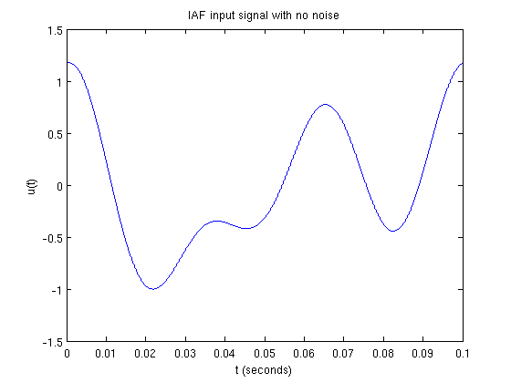
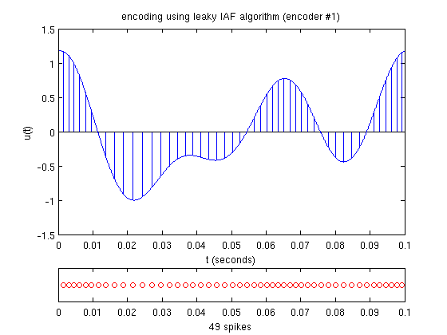
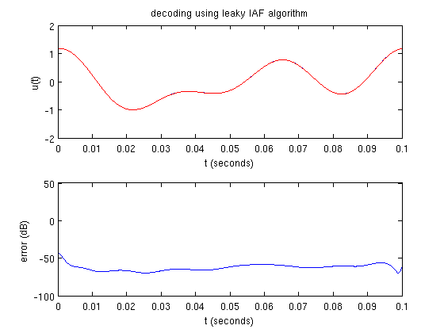
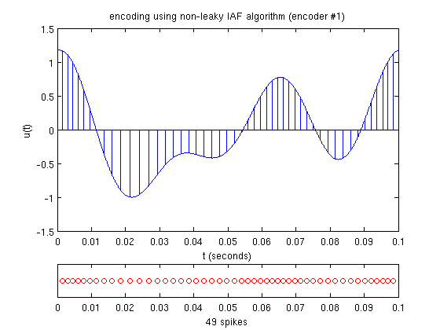
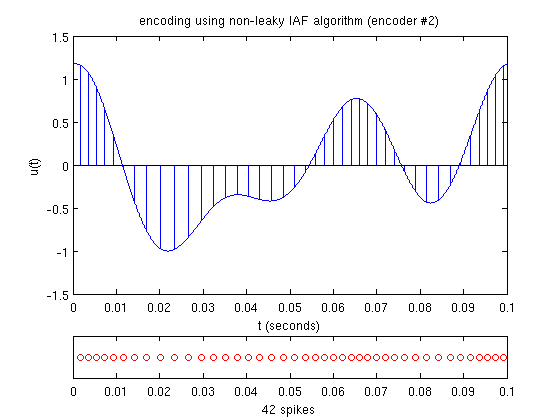
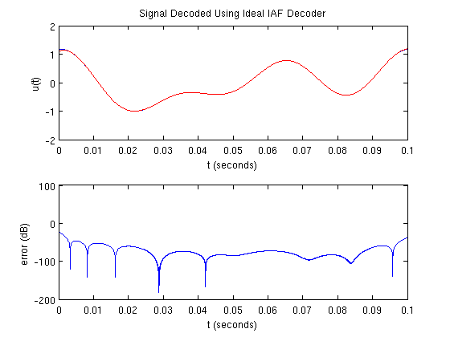

Time Encoding and Decoding with Multiple Integrate-and-Fire Neurons
This demo illustrates the time encoding and decoding of a bandlimited signal using an ensemble of integrate-and-fire neurons.
Contents
Generating a Test Signal
Generate a noiseless signal 0.1 s long sampled at 1 MHz containing 3 components no greater than 32 Hz:
dur = 0.1; % duration fs = 1e6; % sampling frequency dt = 1/fs; % sampling resolution f = 32; bw = 2*pi*f; % bandwidth (rad/s) t = [0:dt:dur]; % time support np = -inf; % noise level if np == -inf, fig_title = 'IAF Input Signal with No Noise'; else fig_title = sprintf('IAF Input Signal with %d dB of Noise',np); end rand('twister',0); randn('state',0); fprintf(1,'%s\n',fig_title); u = func_timer(@gen_test_signal,dur,dt,f,np); figure plot_signal(t,u,fig_title);
IAF Input Signal with No Noise execution time = 0.122 s
Time Encoding
In this example, the input signal is encoded using two IAF neurons with different encoding parameters:
b1 = 3.5; % bias d1 = 0.7; % threshold R1 = 10; % resistance C1 = 0.01; % capacitance b2 = 3.4; % bias d2 = 0.8; % threshold R2 = 9.0; % resistance C2 = 0.01; % capacitance
Verify that recovery can take place with the leaky and ideal parameters:
if ~iaf_recoverable(u,bw,b1,d1,R1,C1), return end if ~iaf_recoverable(u,bw,b2,d2,R2,C2), return end if ~iaf_recoverable(u,bw,b1,d1,inf,C1), return end if ~iaf_recoverable(u,bw,b2,d2,inf,C2), return end
Encode the signal using the leaky model:
fig_title = 'Signal Encoded Using Leaky IAF Encoder #1'; fprintf(1,'%s\n',fig_title); s1_leaky = func_timer(@iaf_encode,u,dt,b1,d1,0,R1,C1); figure plot_encoded(t,u,s1_leaky,fig_title);
Signal Encoded Using Leaky IAF Encoder #1 execution time = 0.258 s
fig_title = 'Signal Encoded Using Leaky IAF Encoder #2'; fprintf(1,'%s\n',fig_title); s2_leaky = func_timer(@iaf_encode,u,dt,b2,d2,0,R2,C2); figure plot_encoded(t,u,s2_leaky,fig_title);
Signal Encoded Using Leaky IAF Encoder #2 execution time = 0.252 s
Encode the signal using the ideal model:
fig_title = 'Signal Encoded Using Ideal IAF Encoder #1'; fprintf(1,'%s\n',fig_title); s1_ideal = func_timer(@iaf_encode,u,dt,b1,d1,0,inf,C1); figure plot_encoded(t,u,s1_ideal,fig_title);
Signal Encoded Using Ideal IAF Encoder #1 execution time = 0.227 s
fig_title = 'Signal Encoded Using Ideal IAF Encoder #2'; fprintf(1,'%s\n',fig_title); s2_ideal = func_timer(@iaf_encode,u,dt,b2,d2,0,inf,C2); figure plot_encoded(t,u,s2_ideal,fig_title);
Signal Encoded Using Ideal IAF Encoder #2 execution time = 0.230 s
Time Decoding
The signal can be recovered for both the leaky and ideal models:
fig_title = 'Signal Decoded Using Leaky IAF Decoder'; fprintf(1,'%s\n',fig_title); u_rec_leaky = func_timer(@iaf_decode_pop,{s1_leaky,s2_leaky}, ... dur,dt,bw,{b1,b2},{d1,d2},{R1,R2},{C1,C2}); figure plot_compare(t,u,u_rec_leaky,fig_title);
Signal Decoded Using Leaky IAF Decoder execution time = 2.596 s
fig_title = 'Signal Decoded Using Ideal IAF Decoder'; fprintf(1,'%s\n',fig_title); u_rec_ideal = func_timer(@iaf_decode_pop,{s1_ideal,s2_ideal}, ... dur,dt,bw,{b1,b2},{d1,d2},{inf,inf},{C1,C2}); figure plot_compare(t,u,u_rec_ideal,fig_title);
Signal Decoded Using Ideal IAF Decoder execution time = 0.503 s
Author: Lev Givon
Copyright 2009-2012 Lev Givon